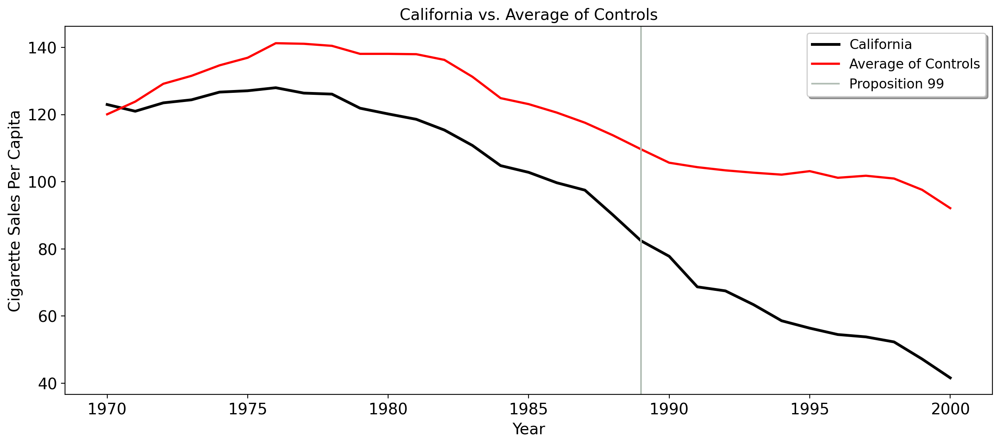
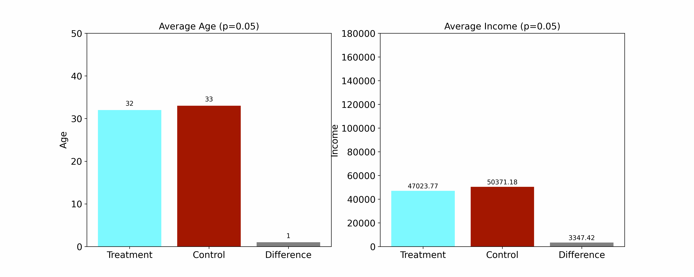
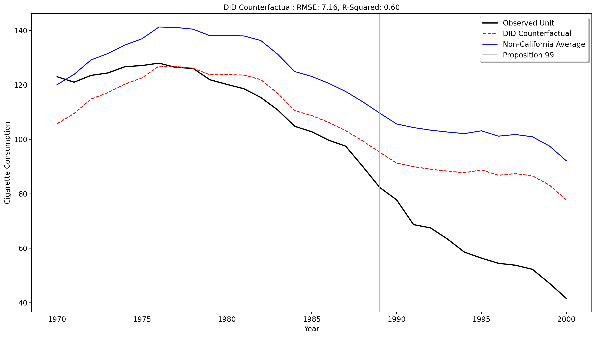
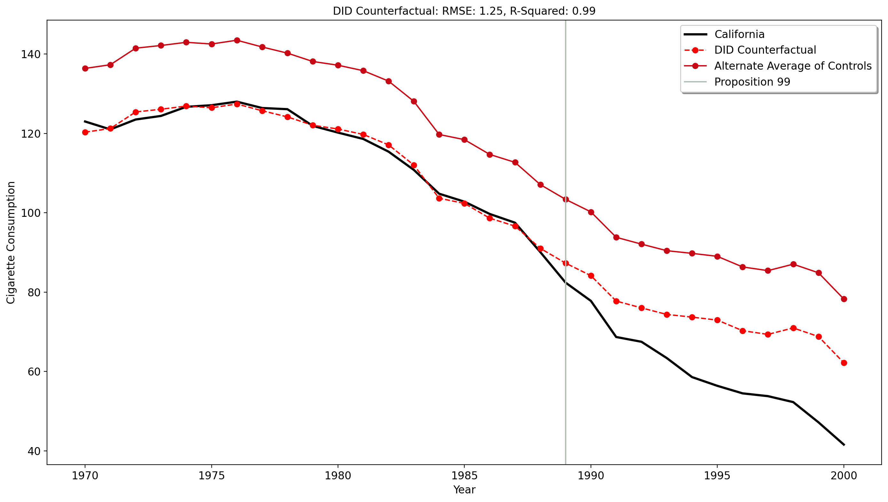

7 Causal Inference
Statistics teachers oftentimes proudly declare to their students that correlation is not causation when emphasizing the idea that just because two things move together that doesn’t mean that one thing is causing the other thing. We’ve discussed examples of this before. So, the question that (at least for me) itched in the back of my mind was “Okay. Well, what is causality then? What does it mean for a thing to cause another thing?”
Our final chapter covers treatment effects/causal inference for policy analysis. Strictly speaking, we could have multiple courses on this. So, as an introduction, this chapter seeks to provide you with the basic philosophy of causal inference, specifically, what it is as a concept, how it’s used in the policy sciences, and how we may use regression to implement basic causal designs for research.
Important
In this chapter, I (in addition to the basic philosophy of causality) introduce one of the basic causal inference methods in econometrics and public policy: the difference-in-differences design. It is designed specifically for impact analysis (that is, how one policy affected some specific outcome). Even though it is the last thing we cover, it is not a requirement for your final papers. You may use normal regression to study mere associations if you so choose.
7.1 What Is Causality?
As I mentioned in the chapter on correlation, humans have evolved to think hypothetically. It is how we have survived for as long as we have. Causal inference demands that we imagine another world that we believe could exist, but doesn’t exist. In history, we’d call this a “counterfactual”, so termed because we are talking about a fictional scenario that happened in contrast to observed facts. We as human beings do this all the time.
How would the American economy have evolved post 1860 if the Civil War never happened?
What if a school did a new math curriculum? Would math scores improve?
How would gun homicide statistics look, 6 months from now, if a state didn’t pass gun control policies?
How would a grocery store’s in store sales have evolved if it didn’t implement all self checkout scanners?
Did Nebraska’s repeal of the tampon tax affect tampon use? How would tampon sales have evolved if Nebraska didn’t get rid of the tax?
How would New Orleans’ outward migration have looked if Hurricane Katrina didn’t happen?
A counterfactual, at its heart, is the way a metric, outcome, or construct would have looked in a world where what did happen (some treatment, policy, or intervention), did not happen. However, we get but one copy of reality. We can’t literally look at the United States where the Civil War happened (the reality we have) and one where it didn’t happen (not that we’d really want to, by the way). We can’t have a school with one grade level has two math curriculums (the current one and new one) at once, and even if we could, how could we know the new curriculum is the driver of grades instead of something else? We can’t see the same city that has banned guns and not done so, or a state that both taxes and doesn’t tax tampons. Thus, counterfactuals are things we can estimate, guess about, and speculate on, but never see in real life. Before we get into how we’d estimate counterfactuals statistically, though, let’s use a more relatable example.
Suppose I’m going to school today. I think the way I take to school (Way A) is quicker than Way B. This gives us a set of two ways to take, \(d \in \{0,1\}\) (read as “d in 0 1”), where \(d=0\) means we’ve taken Way B and \(d=1\) means we’ve taken Way A. The outcome of interest \(y\) is the commute tone associated with each way we take, Each way we take, expressed formally as \(d \mapsto y\left(d\right)\), or our commute time being a function of the road we choose. We may represent the outcomes of each way as \(y^A\) and \(y^B\), where naturally \(y^A\) is how long it takes if we take my way and \(y^B\) is how long it takes if we go the other way. The “treatment effect” of Way A is \(\tau = y^A - y^B\). Here, \(\tau\) (the Greek letter “t-ow”) is the difference in minutes between the way it took me by taking my way, and the time it would’ve taken me if I’d taken Way B. In fact, I did this as I wrote this. I used Google Maps to tell me how long the drive from my apartment to Georgia Tech would be. Using the highway it takes 14 minutes. But, one of the options when I avoid highways takes 23 minutes.
| Way Taken | Indicator \(d\) | Commute Time | Outcome \(y\) |
|---|---|---|---|
| Way A | \(d=1\) | \(y^A = 14\) min | \(y = y^A = 14\) min |
| Way B | \(d=0\) | \(y^B = 23\) min | \(y = y^B = 23\) min |
| Treatment Effect | \(\tau\) | \(y^A - y^B = -9\) min | N/A |
Suppose I do indeed take Way A, as I would, and that it in fact takes 14 minutes. Does this mean the effect of Way A is -9, or, my way being quicker by 9 minutes? No, not exactly. Maybe I do take \(y^A\), but traffic builds and it doesn’t on the other way. Or, maybe \(y^A\) still would take 14 minutes, but the other way, \(y^B\), happens to take 20 minutes instead of 23, meaning our treatment effect is now \(14-20=-6\). The problem inherent here is I cannot take both ways at once. I have a choice to make, and once I choose I must commmit to it. I can either take my way or the other way, I can’t do both on the same day at the same time. Thus, because of this choice, I can only guess as to what \(y^B\)’s travel time actually would have been for me on that day. Only one outcome exists in reality. Mathematically, we may represent this as \(y=dy^{A}+\left(1-d \right)y^B\). If we take Way A, we get \(y=y^A \times 1 +\left(1-1\right)y^B\), or just \(y^A\) since anything multiplied by 0 is just 0 and \(y^A \times 1\) is just \(y^A\). If we take Way B, we get \(y=y^A \times 0 +\left(1-0\right)y^B\), or just \(y^B\) because now \(y^A \times 0=0\) and \(\left(1-0\right)y^B\) is just \(1 \times y^B\). This means that the counterfactual is inherently unobservable. Short of time machines where we can peer into alternate universes, the counterfactual is something we have to estimate.
7.2 Randomized Controlled Trials
Establishing causality and generating counterfactuals are all about comparisons. Typically, we compare a group of one or more units that did an intervention or policy to units that did not do the same policy. We use regression as a vehicle to facilitate this comparison. Before we do this for a real policy example though, let’s think about how this is done in a (close to) ideal setting.
In medicine, we must test drugs in order to see if they work before we allow them to be used on humans in a broader sense. We use randomized controlled trials to try to establish the efficacy of drugs. A randomzied controlled trial is a form of study design where we, as the reasearchers, assign a treatment at random to a certain number of people or units or entities. Those who get the treatment we call the treatment group, those who do not get it are called the control group (or, sometimes we call the untreated group the donor pool). When we say “random assignment”, we mean that we assign the treatment such that each person has an equal probability of getting the treatment. There are many such way to do this in reality, but at its heart we essentially use a computer to flip a coin across \(N\) individuals/units to determine if it gets treatment. If treatment assignment is truly random, this now means that any other covariates that may influence the outcome do not predict treatment status or outcome information.
Say we wish to study the impact of a vaccine on recovery time. We cannot just give the vaccine to some people and not others in a non-random way because maybe other variables are influencing recovery rates. Perhaps those who took the vaccine are younger on average than those who didn’t. Or, maybe they had bettter baseline health characteristics. This means, on average, those who took the vaccine would recover from COVID (say) quicker than the control group, not completely because of the vaccine but because they were already healthier or younger on average compared to the control group. We’d say something is wrong if they didn’t recover quicker. Alternatively, maybe there are just unobserved factors we can’t see which explain why the treatment group did better, to a degree.
When the coin flip decides who gets the vaccine, then in a large enough representative sample, our treatment and control groups are balanced across all confounders, on average. We say “balanced” because when all study participants of all ages, races, and so on are equally likely to be given the vaccine or not, the average difference in recovery time can be better attributed to the vaccine instead of other factors such as age. Thus, it is very important to ensure that our control group is balanced across all relevant areas which may affect the outcome. If our treatment and control groups are balanced, we may compute the average treatment effect of the treatment as \(\text{ATE}=\frac{1}{N}\sum_{i=1}^{N}y_i^1-y_i^0\). This is just the average of the raw differences in the outcomes of the treatment group and control group, where \(y_i^1\) is the observed outcomes for all of our treated units (recovery time, in this case) and \(y_i^0\) represents the average recovery time for all those in the control group.
To illustrate the idea of balance in a public policy setting, I generate synthetic data on 100 individuals who, at their job, enter some program which may increase income. Individuals are aged from 18 to 50. However, age may correlate with income. Older people tend to have more work/professional experience than younger people, on average. So, simply comparing the outcomes of adults versus the outcomes of a younger group may be ill-advised, as maybe those who make more money and participated in the program would have made more money anyways, without the program, due to different baseline levels of experience due to age. To test this, I iteratively assign some probability of treatment to all of them from \(0.05 \leq p \leq 0.5\) in increments of 0.01. We can see, from the GIF below, that when the probability of being treated is \(0.5\), the differences across both age and pre-existing incomes vanishes. The control group is on average a year older than the treatment group, and the income difference between them vanishes to an absolute difference of 54 dollars, where the treatment group makes more than the people who didn’t do the jobs program. So now that we’ve randomized the treatment, we can have people take the program and see how it affects their incomes.
7.3 Problems With Randomization
The central issue with randomization is that there are some interventions (in fact, most of them) that researchers simply cannot randomize. After all, many treatments of interest have explicit assignment mechanisims (i.e., this neighborhood has high crime rates therefore we elect to send more police as a response to crime). Even if the rationale for doing the treatment is not given, sometimes our available set of control units may differ in important ways from the unit that’s treated.
In February of 2023, Turkey had an earthquake. Suppose we’re interested in the effect of this earthquake on the local economic outcomes for the affected cities or the entire country. Well, researchers cannot randomize earthquakes to strike certain cities versus others, and even if we could this would be morally unacceptable. So assuming we were comparing cities in Turkey that were affected to those that weren’t, the affected areas may differ in their baseline characteristics from unaffected areas. For example, maybe poorer areas were more vulnerable than richer ones. For a cross country comparison, maybe bulding codes would explain the differences in the effect of the earthquake which, in turn, affect the economic implications for Turkey versus another unexposed nation.
Another example is cannabis legalization. We cannot flip coins to have some states legalize cannabis and others not. Canabis’ legality is decided by the preferences of the legislature. Thus, we run into the problem of selection bias (as in, maybe some states are more likely to legealize cannabis than others). We also run into counfounding biases. If we wish to see how legal cannabis affected alcohol sales for Oregon, then we need to consider what other factors may affect alcohol consumption aside from the policy of interest. That is, Oregon may differ from other states (say, Alabama or Mississippi) on key characteristics that makes the causal comparison unreasonable. Maybe the price of alcohol between Oregon and a set of others states was not similar enough. Maybe Oregon simply had different economic conditions that made alcohol consumption more or less likely. Perhaps cultural factors would lead to higher level of alcohol consumption anyways, absent cannabis legalization. The fact that we cannot randomize means that researchers cannot make plausible the unconfoundedness assumption (or, lack of omitted variable bias) which underlies OLS regression models.
7.4 Difference-in-Differences
Even though we cannot randomize all treatments/policies, does this mean that we cannot do policy analysis at all? No. Modern econometrics has developed a slew of methods for doing policy analysis when the intervention of interest simply cannot be subject to a controlled expriment. I now introduce the difference-in-differences method (DD), using Proposition 99 as an example case. DD is a method used for panel data.
7.4.1 DD Setup
To implement DD, we need a few key ingredients: First, we need a treatment of interest with a clear before and after point. In our case, Proposition 99 was passed in 1988, and enacted in 1989. So, we have a clearly defined treatment point. We also need at least one unit that experienced the treatment, and at least one that doesn’t experience the treatment. In our case, we have \(N=39\) units. Here, each unit is indexed to the letter \(i\). For our purposes, \(i=1\) is California, and the other \(i=\{2 \ldots 39 \}\) units are the control states. and \(T=31\) time periods, where, respectively, \(T_0=19\) refelcts the number of preintervention periods from 1970 to 1988 and \(T_1=12\) reflects the number of post-intervention periods. In panel data, each of the units corresponds to only one time period. Each of the 39 units, in this case, has 31 rows.
7.4.2 Introducing Parallel Trends
Unlike in a setting where we have a randomized trial, our control group will not be balanced on covariates/outcomes with the treatment group in the pretreatment period. That is, if we take the average of our treatment and control group outcomes in the pre policy period, the numbers will likely not have the same or very close values as they did in the GIF above when I demonstrated randomization. But that’s okay: what if we don’t need the means to be balanced exactly? What if we just need for the trends of the groups to be similar to one another?
DD asks us, as analysts, to accept a singular condition as plausible: namely, that the intercept adjusted average of our controls is a good enough proxy for how the treated unit’s outcomes would look absent treatment. This is called the “parallel trends assumption”. It means that if the intervention never happened, the average trend of our control group would move in the same way as the average of the treated unit. The parallel trends assumption is inherently untestable, since we only actually observe \(y=dy^{1}+\left(1-d \right)y^0\). However, the key we shall focus on is the parallel-ness in the pre-intervention period, since this is the only time period we observe all of our units without treatment.
Note
I will use “parallel trends”, “parallel pre-trends”, and other words to that effect interchangeably.
7.4.3 Quality of Parallel Trends
For parallel trends to hold, the control group must be as similar as possible to the treatment group before the treatment was done.
Why?
The quality of our controls is what we use to build our counterfactual. I wrote above that causal inference is predicated on comparisons. For example, let’s say Honolulu implements an anti-crime policy. Can we use New Orleans or St. Louis as comparison cities? Likely not. The latter two are high crime areas, being regularly distinguished in national crime statistics for having high murder rates and other violent crimes. They are heavily urbanized places, with vastly different cultural makeups, climates, and settings. Therefore, we wouldn’t expect for these two cities to be sufficiently comparable enough to Honolulu to warrant a good causal comparison.
A good first way to assess the quality of parallel pre-intervention trends is to simply plot the average control outcomes and the average treatment outcomes and look at how similar their trends are in the pre-intervention period.
Here, we plot the cigarette consumption of California versus the average of control states. We can see in 1970, California is fairly similar to the control average. In fact, the average of controls and California both grow in their consumption rates up until 1976. However as the years progress, the average trend of controls grows at a much faster rate than California’s. California’s smoking trends grew relatively little and begin to precipitously fall in and after 1976, whereas the control group’s trend has much higher rates of smoking. We can also investigate the quality of parallel pre-trends empirically without needing to use graphical methods, as we will show below.
7.4.4 Estimating DD
As one might expect, the main workhorse of DD is simply OLS regression, the topic of our previous chapter. I will give Stata and R code below so we can streamline DD estimation, but I think it helps a lot to understand what’s happening from the perspective of regression at first.
To estimate basic DD models, we seek the line that minimizes the prediction error between our independent variables and our outcome. However in this case, our outcome and predictors are special. Our dependent variable in this regression model, \(y_{1t}\), is the pre-intervention outcomes of our treated unit, California. Our independent variable is the year-wise pre-intervention average of the 38 control states, \(\bar{y}_{\text{co},t}\). To show you that we’re not speaking about abstract concepts, below I show the dataset we’d use to do DD with. We index the year to the outcomes of California and the average of its controls.
| Year | California | Control Group Mean |
|---|---|---|
| 1970 | 123 | 120.08 |
| 1971 | 121 | 123.86 |
| 1972 | 123.5 | 129.18 |
| 1973 | 124.4 | 131.54 |
| 1974 | 126.7 | 134.67 |
| 1975 | 127.1 | 136.93 |
| 1976 | 128 | 141.26 |
| 1977 | 126.4 | 141.09 |
| 1978 | 126.1 | 140.47 |
| 1979 | 121.9 | 138.09 |
| 1980 | 120.2 | 138.09 |
| 1981 | 118.6 | 137.99 |
| 1982 | 115.4 | 136.29 |
| 1983 | 110.8 | 131.25 |
| 1984 | 104.8 | 124.9 |
| 1985 | 102.8 | 123.12 |
| 1986 | 99.7 | 120.59 |
| 1987 | 97.5 | 117.59 |
| 1988 | 90.1 | 113.82 |
We are, in effect, exploiting the correlations between the average of controls and the treated unit to produce a counterfactual. After all, we would imagine that if the average of controls is similar in trend to that of the treated unit, then this average is likely similar to the treated until on unobserved factors as well. So, if the treated unit and control group both have very similar trends in the pre-intervention period, all we now need us a time-trend to account for the time specific differences, captured by our intercept. The simple DD model looks like
\[ y_{1t} = \beta_{1}\bar{y}_{\text{co},t} + \beta_0 \quad \text{s.t. } \beta_1 = 1. \]
As promised, our dependent variable is the outcomes for unit \(i=1\). Our independent variables are the average of our control unit outcomes, and an intercept (which we’re estimating). Notice here how we force the coefficient for the average of controls to be 1.
Why?
DD presumes that a pure average of our controls is a good enough proxy for our counterfactual. In other words, in the DD world, all of our control units are treated as equally valid for predicting the counterfactual. So, to have the time-intercept reflect the pre-intervention difference between the pure arithmetic average of controls versus a weighted average of controls, \(\beta_{1}\) must be equal to 1. If we multiplied it by some other value, we’d be using a weighted average, not an arithmetic average.
After we estimate this model (again just for the preintervention period), we predict the remaining values for the post-intervention period. How do we do the prediction, by the way? Well, it’s easy! We already know what \(\beta_{1}\) is, that’s just the mean of our control group. So now as per the model above, we only need to estimate \(\beta_{0}\). Once we have \(\beta_{0}\), we add or subtract whatever that value is to each value of the mean of controls! The constant here for the intercept term is roughly \(14.359\). I plot the results of this regression model below. I also use a table to compare the observed values of the treated unit to the values of the DD counterfactual.

| Year | California | DD California |
|---|---|---|
| 1989 | 82.4 | 95.304 |
| 1990 | 77.8 | 91.307 |
| 1991 | 68.7 | 89.983 |
| 1992 | 67.5 | 89.036 |
| 1993 | 63.4 | 88.336 |
| 1994 | 58.6 | 87.759 |
| 1995 | 56.4 | 88.799 |
| 1996 | 54.5 | 86.825 |
| 1997 | 53.8 | 87.43 |
| 1998 | 52.3 | 86.599 |
| 1999 | 47.2 | 83.236 |
| 2000 | 41.6 | 77.775 |
Well, what do we see here? We see the counterfactual produced by DID, using all 38 controls. As promised, the counterfactual predicted by DID is simply the original average of the control units minus 14.359! Seriously, that’s all it is.
Now that we’ve predicted our counterfactial, we now calculate the treatment effect for California. We calculate the average treatment effect on the treated unit as
\[ \text{ATT} = \frac{1}{T_1 - T_0} \sum_{T_0 +1}^{T} (y_{1t} - \hat{y}_{1t}), \]
or the average of the differences between what we in fact observed (California under treatment) and what we did not observe (California’s counterfactual smoking outcomes predicted by DD). The ATT suggests that Proposition 99 decreased tobacco consumption by about 27.349 packs per capita, with a 95 percent confidence interval of \(\left[-32.522,-22.177\right]\).
7.4.5 A Second Pass at Parallel Trends Quality
Okay, now we have this counterfactual. But is it a good one? How can we tell if the counterfactual is plausible here? Looking at graphics is fine, but how can we statistically evaluate if the DD model is a good one? We can begin by recalling a metric of fit, the RMSE. As before, the RMSE represents the normalized average error squared between our observed values and our predicted values.
In this case though, think of the RMSE as a metric of parallel-ness. The smaller the RMSE is, the better our pre-intervention predictions are. The bigger the RMSE is, the worse our pre-intervention predictions are. The reason this matters is because if we have good pre-intervention model predictions, we’re likely to have better post-intervention counterfactual predictions. After all, if our model tracks closely with the actually observed values in the pre period, then it likely a good representation of how the post-intervention counterfactual would look since our predictions come from untreated units only. If we have worse pre-intervention model predictions, the opposite is true because the model does not explain the pre-intervention period data well.
Let’s apply these ideas to our example. The RMSE here is about 7. Strictly speaking, this number isn’t so bad, and it’s certainly an improvement over the pure average of all controls (without an intercept). But look at what this means practically and focus on the pre-intervention period. The DID counterfactual underpredicts the true values for California in the pre-intervention period from around 1970 to 1975. Beyond this, it also overestimates the observed California’s values between 1980 and 1988. This is particularly bad because if your predictions diverge significantly from the treated unit’s observed values in the years right before the intervention takes place, why would we think that the post-intervention smoking consumption predictions are valid?
This imbalance comes from a violation of the parallel trends assumption. Why might this be? Well, we included all 38 control units. All of our control units may not be comparable to California’s tobacco consumption trends. Take Kentucky or New Hampshire, for example, states that have very high smoking rates per capita. In the same way that outlier observations may corrupt an average, they equally may corrupt regression predictions for causal analysis.
7.4.6 Alternate Control Group
What if we used a different control group though? Suppose we altered the control group to be a smaller subset of controls. Say I use Montana, Colorado, Nevada, Connecticut. After all, why not? Montana, Colorado, and Nevada are all geographically quite close to California, and Connecticut has a similar preintervention trend of tobacco smoking to California.

Well now! This certainly looks a lot more parallel than when we used all of our control units!! When we use the limited set of controls, \(\tau=-13.647\), with a confidence interval of \(\left[-14.549,-12.745\right]\). Think of how big of a reduction this is: when we used all control units (some of which are clearly different from California’s pre-1989 tobacco smoking trends), we come up with a decrease of 27 packs per capita, but when we use a more limited pool of controls, we get an ATT which implies a reduction of 13.6 packs per capita. That’s pretty much a reduction of 100% in terms of the average treatment effect! We have cut our treatment effect in half by virtue of having a better control group.
In addition to the pre-intervention average trend of controls “looking” more parallel, we can confirm that the regression model with the alternate control group is superior to the original model in that the new control group reduces the bias from parallel trends imbalance. The RMSE for the alternate control group shrinks by 140% compared to the original model. The fact that our RMSE shrinks by so much indicates the value of choosing the control group judisciously. By selecting a valid pool of controls, we not only decrease our model’s prediction errors, but we also gain more confidence in the true effect of our intervention, as opposed to the original estimate whose estimates were much wider.
Note
As with OLS, rarely will you do DD in the manner I’ve described it above. However, I feel that Stata and R, through their excellent computing capabilities, can largely obscure what’s going on when we use reg or didregress. Also, we can extend DD to instances where many units are treated at different time points. However, for the introductory level, I think DD with a single treated unit is more than adequate as a starting point.
Next, we’re going to do the exact same example in Stata, however, we’re going to take advantage of the features that Stata allows for to automate this process.
7.4.7 Streamlining DD in Econometrics Software
Say that we wished to estimate this in Stata. Here is what we’d do:
clear *
import delim "https://raw.githubusercontent.com/OscarEngelbrektson/SyntheticControlMethods/master/examples/datasets/smoking_data.csv", clear
g treat = cond(state=="California",1,0)
g post = cond(year > 1988,1,0)
egen id = group(state)
xtset id year, y
cls
reg cig i.treat##i.post, vce(cl id)I create a treatment variable called treat (g is short for the full command name, generate). I do this using the condititional function. You can type in h cond to see the help file, or the way to use the syntax. However for our purposes, just know that it creates a variable equal to 1 if the state variable is “California”, else 0 (because California is our treated unit). I then use the same to create a post variable, equal to 1 if the variable year is greater than 1988. I then generate a numeric variable that is a number that uniquely identifies each state in our dataset, using the egen command and its corresponding function group. I then use Stata’s xtset command to sort our data by id and year. As promised, we have 31 rows for all 39 units. I then clear the screen using cls so we can better focus on the regression estimates.
Now, we use reg, short for regress, to estimate the treatment effect. To do this, we use something called an interaction term. This will be covered more in other methods courses, but think about it like this: we can have a unit be treated, or not. We can have the year be before the treatment, or not. But, for our purposes, we’re interested in the effect of being both treated (California) AND being in the post-intervention period (after 1988). So, the regression model takes the form of \(y= (d_i \times \text{post}_t)\).
Below, we will see a table. The first coefficient we will see is 1.treat -14.359. This is the exact same number as we fot estimating the baseline differences between the average of controls and the treated unit in the pre period. In other words, it is the effect of treat being 1 and post being 0. Similarly, post is the effect of 1.post being equal to 1 and treat being 0. treat#post 1 1 -27.34911 is the effect of both treat being 1 AND post being 1. It is our treatment effect coefficient. As usual, the constant _cons is the value we predict where all of our predictor variables are equal to 0. In this case, this is simply the empirical average of the control group in the pre period. We also can see the associated confidence intervals, t-statistics, and standard errors.
You may at this point be asking why I didn’t just show it like this in the first place: why bother with the original regression method at all, where we manually take the average of controls and and use it as a predictor in OLS? Why not just use this method and focus my discussion on that? The reason for this is because by doing it this way, Stata is obscuring important details from you.